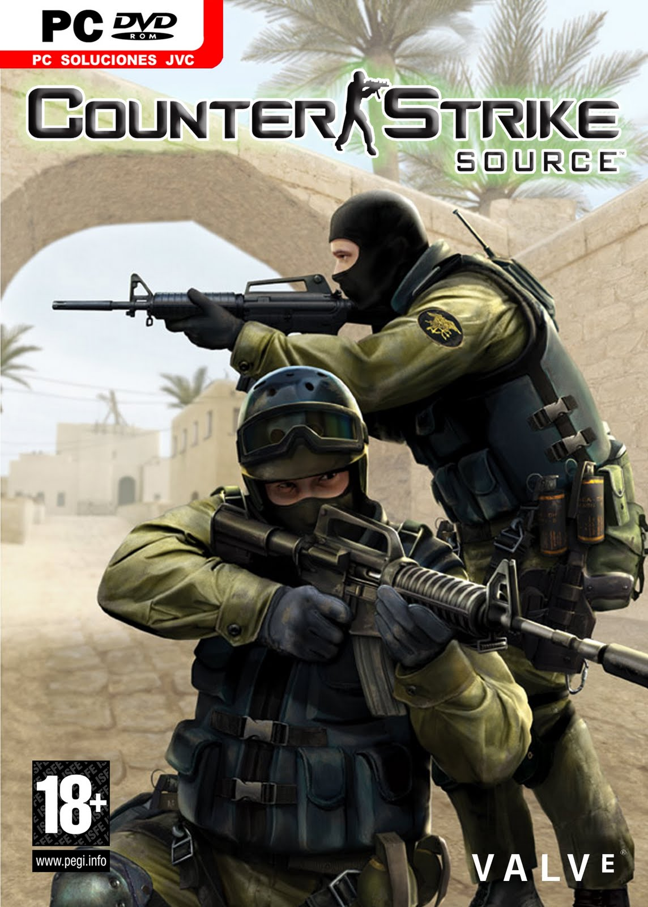

Фракції Моделі бійців у грі представлені терористами і контртерористами з вигаданих організацій: Терористи: Arctic Avengers (укр. Арктичні месники, Швеція), Elite Crew (укр. Елітний підрозділ, Близький Схід), Guerilla Warfare (укр. Повстанські сили, Середній Схід), Phoenix Connexion (укр. Клан «Фенікс», Східна Європа). Контртерористи: GIGN (Groupe D'Intervention de la Gendarmerie Nationale, Франція), GSG-9 (Grenzschutzgruppe-9, Німеччина), SEAL Team 6 (SEa Air Land, Команда 6, США), SAS (Special Air Service, Велика Британія) Нажмите, чтобы поделиться на LinkedIn (Открывается в новом окне) Нажмите, чтобы поделиться записями на Pocket (Открывается в новом окне) Нажмите, чтобы поделиться в Telegram (Открывается в новом окне) *Отец (жарг.) — профессиональный, высококлассный игрок. В Counter-Strike есть достаточно много секретов, владение которыми позволяет повысить собственную эффективность и получать от игры гораздо большее удовольствие. В этом руководстве освещены специфические моменты, касающиеся личных качеств игрока: умения двигаться, стрелять, ориентироваться во времени и пространстве и взаимодействовать с командой. Хочешь жить — умей вертеться Этот девиз отражает важнейший принцип ведения боевых действий в Counter-Strike. Консоль Зайдите в свойства ярлыка запуска Half-Life или Counter-Strike и добавьте следующие ключи: ..Half-Lifehl.exe -nojoy -console -game cstrike Теперь вы сможете вызвать консоль во время игры клавишей "~’". Чтобы узнать значение какой-либо переменной, введите ее название в консоль и нажмите Enter. Чтобы внести изменения, наберите соответствующую команду, пробел и новое значение (численное или текстовое, кавычки не обязательны). Некоторые команды не требуют указания параметров. Чтобы вызвать строку, введенную ранее, воспользуйтесь клавишами и . Достаточно всего лишь одного выстрела, чтобы превратить вас из непосредственного участника событий в пассивного наблюдателя, так что первым делом научитесь "уворачиваться" от пуль. Для этого активно применяйте клавиши Move left и Move right (A и D на клавиатуре, здесь и далее используется стандартная раскладка). Вот упражнение, которое поможет понять, как нужно двигаться относительно соперника. Запустите уровень cs_siege, зайдите за террористов, закупите патроны, затем выйдите в гараж. Здесь попробуйте двигаться вокруг колонны с помощью клавиш A или D, беспрерывно обстреливая ее. Чтобы описать окружность, вам придется держать прицел на колонне и немного "подруливать" клавишами W и S. Этот маневр называется "круговой стрейф" и применяется для того, чтобы уходить от пуль соперника, при этом продолжая в него стрелять. "Круговой стрейф" также позволяет огибать препятствия и поворачивать за угол, не сводя прицел с того места, где может находиться противник. Режим ходьбы (клавиша Shift) необходим для того, чтобы перемещаться по уровню бесшумно. Примерно так же медленно и бесшумно вы двигаетесь, если у вас в руках винтовка AWM. Для того чтобы бежать быстрее, в руках должен быть пистолет или нож, с любым другим оружием бег замедляется. Клавиша "приседание" (Ctrl) позволяет бесшумно ползти на четвереньках, но также полезна для более высокого прыжка, если ее нажимать вслед за клавишей Space. Если карабкаться по железной лестнице, нажав Ctrl, шум значительно уменьшится.
Бей первым, Фредди! Оперативные команды exec my.cfg — выполнить кофигурационный файл my.cfg volume — громкость sensitivity — чувствительность мышки say_team — послать сообщение своей команде say — сообщение для всех (участники игры зрителей не "слышат") votemap # — голосовать за смену текущей карты на ту, что имеет номер # listmaps — выдать список карт vote # — голосовать против игрока, который имеет номер # listplayers — выдать список игроков drawradar — показать радар hideradar — спрятать радар adjust_crosshair — изменить цвет перекрестья (требуется повторный ввод) Перефразируя слова известной песни, "есть только миг между прошлым и будущим, и именно он называется "пинг". Пинг — это время, за которое пакет данных доходит от вашего компьютера до игрового сервера и обратно. При игре в клубе этот показатель составляет порядка 30 мс, в онлайне — в среднем 200 мс. Теперь прибавьте к этим миллисекундам время реакции игрока, да еще учтите бесконечно большую скорость полета пули и критический характер повреждений, и вам станет ясно, почему при столкновении побеждает, как правило, тот, кто первым открывает огонь. Итак, ваше поведение на игровом поле должно быть подчинено одной идее — делать выстрел первым и подавлять соперника огнем. Принцип "пришел, увидел, выстрелил" смените на "пришел, выстрелил, увидел". Рассмотрим примеры. Если на уровне cs_assault террористы повадились "дежурить" в вентиляционном канале, ныряйте в люк одновременно с нажатием курка. Если вы предполагаете или точно знаете, что за ящиком или за углом притаился соперник, открывайте огонь заранее, и в тот момент, когда вы появитесь на виду у противника, в него уже попадут несколько ваших пуль. Когда вы отступаете, не стоит останавливаться и ждать врага, пока он выскочит из-за угла или зайдет в дверь. Лучше самому выпрыгнуть ему навстречу, незамедлительно открывая огонь, — и он опоздает, какой бы хорошей реакцией ни обладал. Как определить местоположение соперника и траекторию его движения до того, как вы увидите его? Ответ в следующих разделах. Держи ухо востро! Звук — важнейшая составляющая игры, он позволяет "вычислить" координаты противника и выполнить упреждающие действия. Железные лестницы, стекло, вода, пол с различным покрытием, воздуховоды, двери, кнопки — все эти и многие другие элементы издают отчетливо слышимый и легко узнаваемый звук. Если вы изучите карту местности не только визуально, но и акустически, то в буквальном смысле слова будете видеть сквозь стены и не дадите противнику застать вас врасплох. Например, если вы устроили засаду и позади вас есть железная лестница, прислушивайтесь, не карабкается ли кто-то по ней, и если да — открывайте огонь за мгновение до того, как противник появится наверху. При этом обращайте внимание на радар, ведь вполне возможно, что источник шума — ваш товарищ по команде. Когда вы осуществляете какие бы то ни было маневры, помните, что вас прослушивают, не забывайте использовать режим ходьбы и не стреляйте без необходимости. Любые шумные действия по возможности предпринимайте во время перестрелок.Не думай о секундах свысока…в етой игре можно заменять звуки параметри персонажа и много другого про ето ищите вотут